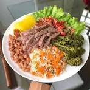

PLATILLO SALUDABLE
Exposiciòn sobre platillo saludable

Materias involucradas:
Ciencias de la Salud
Ecología y Medio Ambiente
Docentes encargados:
Maria del Rocio Rodriguez Rodriguez
César Eumir Rendón RodríguezJose Agustin Gutierrez Bautista
Hacer clic para la pagina 2